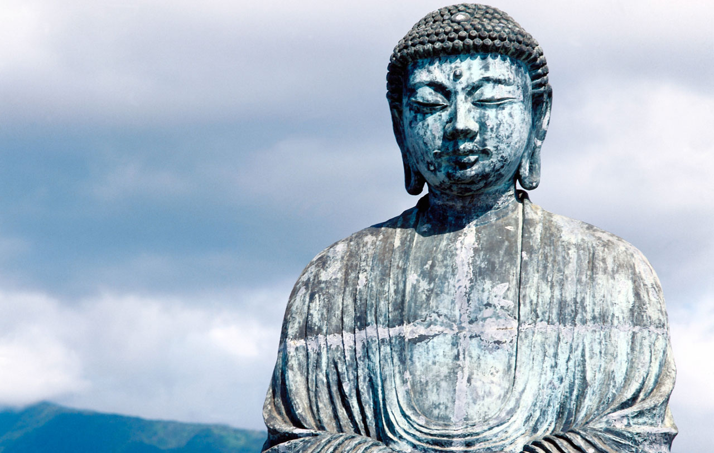

International Society for Universal Dialogue
Home
Welcome
ISUD is a society of scholars, mostly philosophers, from many parts of the world, devoted to promoting international dialogue and the discussion of fundamental questions of universal concern, which affect all humanity, such as world peace, human rights, dialogical interrelations of diverse cultures, and preservation of the world ecology.


ISUD is committed to promoting philosophical discourse intended to encourage the emergence of a more decent and humane world order by promoting dialogue to actualize the highest and richest human values in all dimensions of life.
- What role does philosophical thinking have to play in moving toward a more rational and more humane future?
- What are ethical principles of dialogue?
- How may one understand cultural diversity and universality?
- How best to work toward a culture of peace?
- What is the relationship between the basic liberties of individuals and the collective rights of cultural groups?